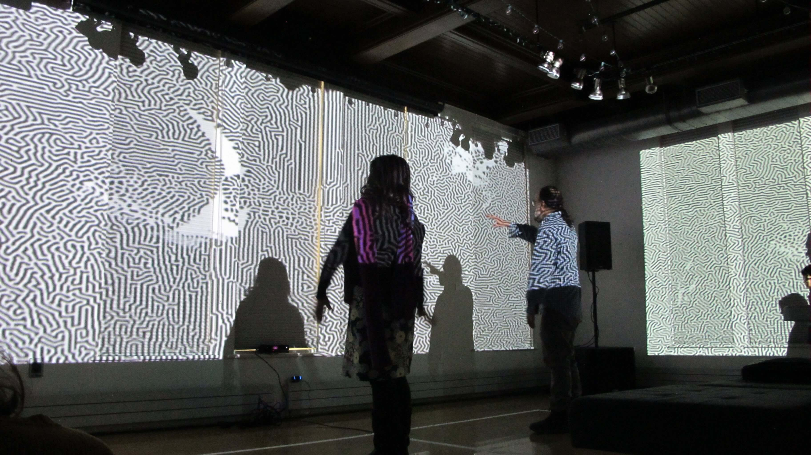
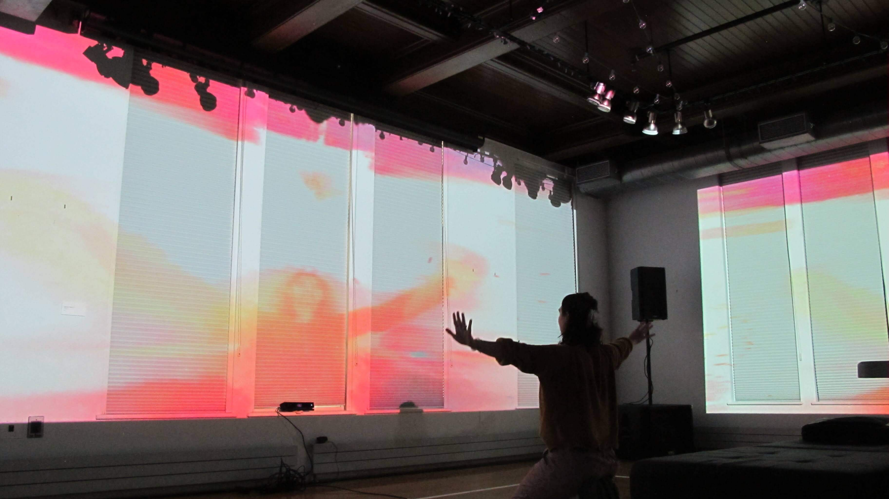
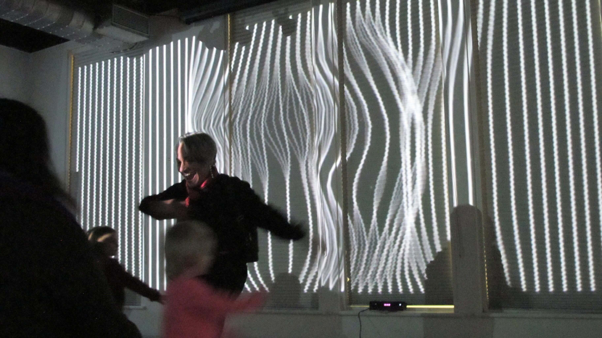
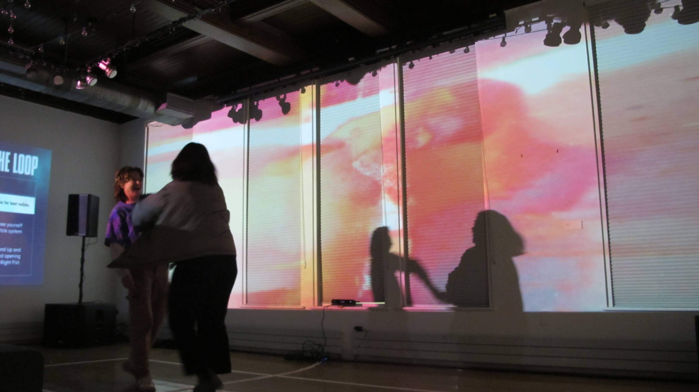
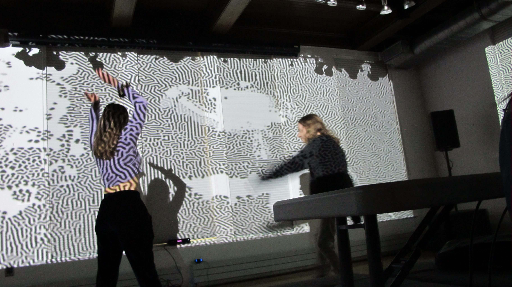
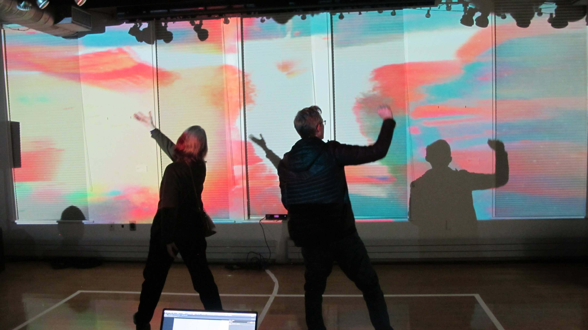
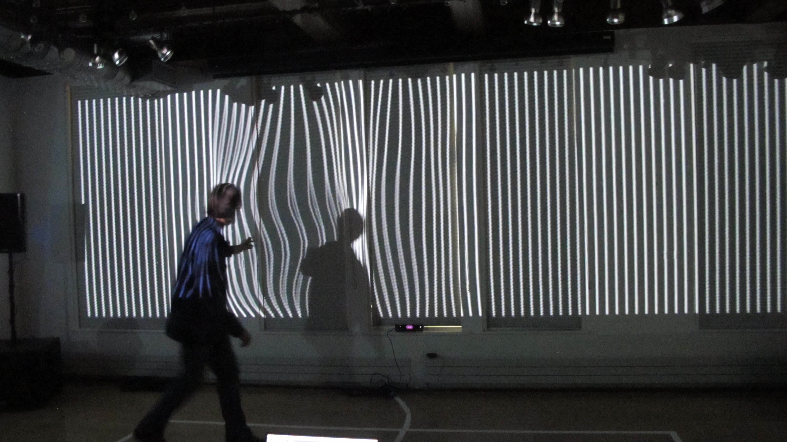

ROLE
concept, sound design, composition, audio reactivity
ABOUT
DANCER IN THE LOOP was an interactive audiovisual installation designed for Burlington's NYE Highlight 2024 festival. Audience members entered a room of full-wall projections that responded to their movement through a series of cameras.
In an age of rapid technological change and the rising prominence of generative AI tools, technology can feel like a scary black box. Indeed, many technological tools are extractive, opaque, and unknowable. But technology can also be empowering—as long as we don't lose sight of our humanity. This event was a celebration of human movement and the ways that technology can respond, not control, how we move.
Across five different "scenes", dancers could sway and interact with the projection to discover how the visuals changed. At the same time, different types of motion would also change the music, by adding new notes, triggering a new sound, or increasing synth parameters such as the cutoff of a filter.



Audience participants moved, swayed, danced, and vibed in the room in front of a camera; this camera was connected to custom software that warped and affect visual projections on the walls, and also changed the music in real time according to their types of movement.
Artists Ben Dexter Cooley (aka St. Silva) and Nate Hicks (aka Silence_Castor) acted as guides through a series of scenes: sonic and visual portals to inspire all kinds of movement from dreamy ambient soundscapes to pulsing electronic beats. Each scene adapted and changed depending on who showed up and how they moved.
Visuals built in Touchdesigner by Nate Hicks. Music composed and altered by Ben Dexter Cooley. You can view a highlight reel of the evening on Vimeo.



